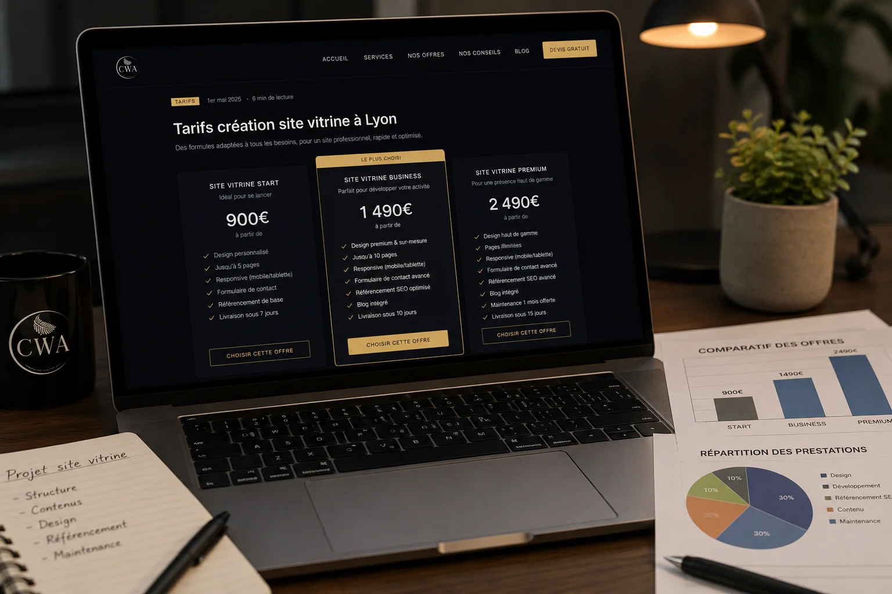

C'est la question que tout le monde se pose avant de lancer son projet web. Et honnêtement, les réponses qu'on trouve en ligne sont souvent floues, ou pire, orientées pour vendre la solution la plus chère. On va être directs.
Les grandes catégories de prix
En 2026 à Lyon, créer un site vitrine peut vous coûter entre 0€ et 15 000€ selon ce que vous choisissez. Voici les vraies fourchettes, sans marketing.
Les constructeurs en ligne (Wix, Squarespace, Jimdo)
Entre 15 et 50€ par mois. Vous faites tout vous-même depuis des templates. Le résultat est souvent correct visuellement mais rarement optimisé pour Google, et votre site ressemble à des milliers d'autres. Vous êtes propriétaire du contenu, mais pas du code. Si vous arrêtez de payer, le site disparaît. C'est la solution pour tester une idée, pas pour développer une activité professionnelle sérieuse.
Le freelance
Entre 500 et 3 000€ en paiement unique selon l'expérience et la complexité. C'est souvent le bon rapport qualité/prix pour un projet simple. Attention cependant : vérifiez toujours le portfolio, les avis clients, et clarifiez dans le contrat qui est propriétaire du code après livraison. Un freelance qui part en vacances pendant votre mise en ligne, ça arrive.
L'agence web à Lyon
Entre 2 000 et 15 000€ pour un site vitrine. Les grandes agences lyonnaises facturent cher parce qu'elles ont des équipes importantes, des locaux, et des processus lourds. Pour un artisan ou un indépendant qui a besoin d'un site efficace, c'est souvent surdimensionné et surfacturé.
La petite agence locale ou le studio web
Entre 450 et 4 000€. C'est notre positionnement chez Central Web Agency. Une équipe réduite, des frais fixes bas, un travail sur mesure sans intermédiaires. Vous payez pour du travail réel, pas pour des frais de structure.
L'abonnement mensuel
Entre 30 et 150€ par mois selon les formules. Vous ne payez pas le site en une fois — la création est incluse dans l'abonnement avec l'hébergement et la maintenance. C'est idéal si vous démarrez avec un budget limité. L'inconvénient : vous n'êtes pas propriétaire du code tant que vous n'avez pas racheté le site.
Le prix d'un site vitrine ne dit pas grand-chose de sa qualité. Ce qui compte, c'est ce qu'il vous rapporte.
Ce qui fait vraiment varier le prix
Deux sites vitrines à 450€ et à 5 000€ peuvent se ressembler visuellement. Voici ce qui justifie réellement l'écart de prix :
- Le nombre de pages — un site 1 page (landing) coûte moins cher qu'un site 6 pages avec galerie, blog et formulaire complexe.
- Le design sur mesure — un template personnalisé revient moins cher qu'un design créé de zéro à partir d'une charte graphique complète.
- Le contenu — si vous fournissez vos textes et photos, c'est moins cher. Si c'est l'agence qui rédige et photographie, ça se paie.
- Le SEO — un site optimisé pour Google dès la création demande plus de travail qu'un site statique sans aucune optimisation.
- Les fonctionnalités — formulaire de réservation, galerie interactive, chatbot, multilingue… chaque fonctionnalité a un coût.
- La maintenance — un site livré sans suivi coûte moins cher au départ mais peut vous coûter cher en cas de problème technique.
À Lyon, quel budget prévoir concrètement ?
Pour un artisan, un coiffeur, un coach ou un restaurateur lyonnais qui veut un site vitrine professionnel, bien référencé et responsive, voici la réalité du marché local en 2026 :
- Budget serré (moins de 500€) — constructeur en ligne ou freelance débutant. Résultat variable, SEO souvent négligé.
- Budget intermédiaire (500 à 1 500€) — freelance expérimenté ou petite agence locale. Bon rapport qualité/prix si bien choisi.
- Budget confortable (1 500 à 4 000€) — agence locale spécialisée, design soigné, SEO intégré, suivi inclus. C'est ce que valent la plupart des projets sérieux.
- Budget important (plus de 4 000€) — grandes agences lyonnaises, projets complexes, stratégie digitale complète. Rarement nécessaire pour un site vitrine simple.
Les questions à poser avant de signer
Quel que soit votre prestataire à Lyon, posez ces questions avant de vous engager :
- Je suis propriétaire du site et du code après livraison ?
- Le site est-il optimisé pour Google dès le départ ?
- Que se passe-t-il si je veux modifier mon site après livraison ?
- L'hébergement est-il inclus ? Si oui, chez quel hébergeur ?
- Avez-vous des exemples de sites réalisés pour des profils similaires au mien ?
- Quels sont les délais réels de livraison ?
Un prestataire sérieux répond clairement à toutes ces questions sans détour. S'il esquive ou que les réponses sont vagues, passez votre chemin.
Notre positionnement chez Central Web Agency
Basés à Heyrieux, à 25 km de Lyon, nous proposons deux formules claires — prix TTC, TVA non applicable, art. 293B du CGI :
- Site clé en main à partir de 450€ TTC — paiement unique, vous êtes propriétaire à 100%, aucun abonnement obligatoire. Design sur mesure, SEO intégré, responsive, 30 jours de retouches offertes, livraison en 1 à 3 semaines.
- Abonnement à partir de 39€/mois TTC — hébergement inclus, maintenance et modifications mensuelles incluses. Idéal si vous préférez étaler le coût dans le temps.
Pas de frais cachés, pas de surprise en fin de projet. Le devis que vous acceptez est le prix que vous payez.